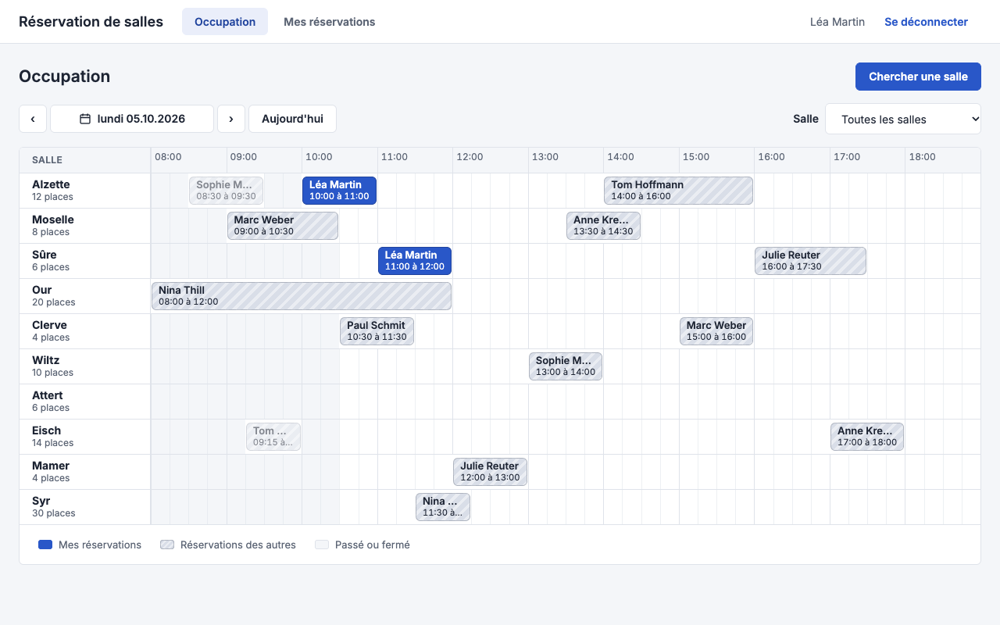

P3 · Conception technique détaillée · Transverse
Écrans : ce que chaque écran appelle et traduit
La vue du dev frontend : pour chaque écran de la conception macro, les endpoints qu'il appelle, les codes d'erreur qu'il doit traduire et les messages qu'il affiche, puis son adresse, ce qui lui arrive d'un autre écran et les rôles et noms accessibles que visent les tests e2e. Le comportement de chaque code est dans la gestion des erreurs.
Plan des écrans
- À quoi sert
- Voir tous les écrans du produit, comment on passe de l'un à l'autre, et aller à leur définition.
- Contenu
- Une card par écran de la conception macro, rangée par parcours : aperçu et nom de la spec UX/UI, lien vers sa définition et vers sa ligne « Par écran ». Les flèches portent l'action qui fait passer d'un écran à l'autre.
- Pourquoi ce formalisme
- Un wireflow, le pendant du plan du site pour le front, dessiné avec le même moteur que celui de la spec UX/UI.
- Lire
- Un écran présent dans deux parcours est dessiné une fois.
- Une boîte de dialogue compte pour son écran.
- Les résultats et les retours en arrière ne sont pas dessinés.
- Un écran sans parcours est à la fin, sans flèche.
- Source
- L'inventaire des écrans et le wireflow de la spec UX/UI, et la conception macro. Le wireflow reste la seule source des enchaînements.
Employé

EC-02

Occupation du jour→ EC-04 Clic sur une case libre→ EC-03 Chercher une salleendpoints et erreurs

Gestionnaire
Hors parcours
Par écran
- À quoi sert
- Servir de point d'entrée au dev frontend, écran par écran.
- Contenu
- Pour chaque écran de la conception macro : les endpoints qu'il appelle, les codes d'erreur qu'il traduit, les messages qu'il affiche, et le lien vers sa ligne « Adresse, arrivée et structure ».
- Pourquoi ce formalisme
- Un tableau, une ligne par écran : le dev lit d'un coup tout ce que son écran touche.
- Lire
- Un écran d'une release suivante, pas encore dans la spec UX/UI, reste sans lien.
- Source
- La chaîne écran, fonctionnalité, endpoint de la macro, les
x-codesd'openapi.yaml, le catalogue des erreurs et les séquences.
Codes communs à tous les écrans, traités par le service de traduction : VALIDATION, NON_AUTHENTIFIE, ERREUR_INTERNE.
Adresse, arrivée et structure
- À quoi sert
- Dire, avant le dev, comment on arrive sur chaque écran et ce que les tests e2e y visent, pour que ni le dev frontend ni le QA ne le devinent.
- Contenu
- Une ligne par écran de la conception macro : adresse et paramètres (chemin, paramètres de chemin et de requête), ce qui arrive d'un autre écran (écran d'origine, message porté et mécanisme : paramètre d'adresse, état de navigation), rôles et noms accessibles des éléments que visent les e2e.
- Pourquoi ce formalisme
- Les objets de page des tests e2e et les écrans se construisent en parallèle : ils s'accordent sur cette table, écrite une fois, plutôt que sur des hypothèses de chaque ticket.
- Lire
- Un nom accessible est le libellé exact de la spec UX/UI. Un écran d'une release suivante garde sa ligne, avec ce qui est déjà connu.
- Source
- Écrite à la main par l'architecte, relue par l'UX et le QA, à partir de la spec UX/UI (contenu, actions, wireflow) et de l'organisation du code (routes du frontend). Le générateur signale un écran de la macro sans ligne.
| Écran | Adresse et paramètres | Arrive de | Rôles et noms accessibles |
|---|---|---|---|
| EC-01 Connexion | /connexion | toute page ouverte sans session : son adresse dans l'état de navigation, rouverte après « Se connecter » | heading « Réservation de salles » ; textbox « Email », « Mot de passe » ; button « Afficher le mot de passe », « Se connecter » ; alert pour MSG-U01 |
| EC-02 Occupation du jour | /occupation, ?jour=AAAA-MM-JJ (aujourd'hui par défaut), ?salle= (id de salle, toutes par défaut) | EC-01 : rien, jour du poste ; EC-06 refusé : MSG-U10 par l'état de navigation | heading « Occupation du jour » ; button « Jour précédent », « Jour suivant », « Aujourd'hui » ; combobox « Salle » ; grid « Occupation », une row par salle ; button « Chercher une salle » |
| EC-03 Recherche de salle | /recherche, sans paramètre (critères en signal) | EC-02 (« Chercher une salle ») : rien, critères vides | heading « Recherche de salle » ; spinbutton « Participants » ; checkbox par équipement ; button « Chercher » ; list « Résultats », button « Réserver » par salle ; status pour MSG-U04 |
| EC-04 Réservation | /reservation/nouvelle, ?salle=&jour=&debut= | EC-02 (case libre) et EC-03 (« Réserver ») : salle, jour et début en paramètres d'adresse, l'écran d'origine dans l'état de navigation pour « Retour » | heading « Réservation » ; combobox « Salle », « Début », « Fin », « Répéter » ; textbox « Jour », « Jusqu'au » ; status « <n> occurrences » ; button « Réserver », « Retour » |
| EC-05 Mes réservations | /mes-reservations | EC-04 après « Réserver » : MSG-02 dans l'état de navigation, affiché une fois en bandeau | heading « Mes réservations » ; status du bandeau MSG-02, button « Fermer » ; list par jour ; button « Annuler » par réservation à venir ; dialog « Annuler la réservation » |
| EC-06 Parc de salles | /parc, garde de rôle gestionnaire | EC-07 après « Enregistrer » : l'id de la salle à jour dans l'état de navigation, pour la mettre en évidence | heading « Parc de salles » ; table « Salles » ; button « Nouvelle salle », « Modifier », « Désactiver » ; dialog « Désactiver la salle » avec MSG-08 |
| EC-07 Fiche salle | /parc/salle/nouvelle ; /parc/salle/:id | EC-06 : l'id de la salle en paramètre de chemin pour « Modifier », rien pour « Nouvelle salle » | heading « Nouvelle salle » ou « Modifier la salle » ; textbox « Nom » ; spinbutton « Capacité » ; checkbox par équipement ; button « Enregistrer », « Retour » |
| EC-08 Occupation de la semaine | /occupation/semaine, ?semaine=AAAA-Wss | à définir avec la spec UX/UI de la release R2 | à définir avec la spec UX/UI de la release R2 |
| EC-09 Statistiques d'occupation | /parc/statistiques, ?du=&au=, garde de rôle gestionnaire | à définir avec la spec UX/UI de la release R3 | à définir avec la spec UX/UI de la release R3 |